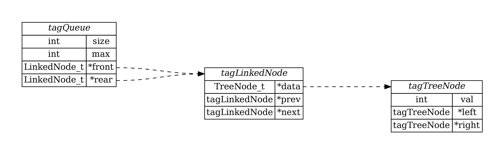

队列提供了一种先进先出（FIFO, First-In First-Out）的存储结构。在 数据结构之队列（链表实现）中，我们介绍了链表实现的队列数据结构，但这种普通的队列只能从尾部插入节点、从首部删除节点。
双端队列（Deque, double-ended queue）是普通队列的扩展，是指允许两端都可以进行入队和出队操作的队列，它不遵循 FIFO 原则。这篇文章扩展了 数据结构之队列（链表实现），实现了基于链表的双端队列。
FIFO 队列结构和接口
下面是 数据结构之队列（链表实现）中实现的普通队列的数据结构和 API 接口。
1
2
3
4
5
6
7
8
9
10
11
12
13
14
15
16
17
18
19
20
21
22
23
24
25
26
| typedef struct tagTreeNode {
int val;
struct tagTreeNode *left;
struct tagTreeNode *right;
} TreeNode_t;
typedef struct tagLinkedNode {
TreeNode_t *data;
struct tagLinkedNode *next;
} LinkedNode_t;
typedef struct tagQueue {
int size;
int max;
LinkedNode_t *front;
LinkedNode_t *rear;
} Queue_t;
Queue_t *createQueue(int max_size);
LinkedNode_t *createNode(TreeNode_t *data);
bool isEmpty(Queue_t *queue);
bool isFull(Queue_t *queue);
void enQueue(Queue_t *queue, TreeNode_t *data);
TreeNode_t *deQueue(Queue_t* queue);
void printQueue(Queue_t* queue);
void freeQueue(Queue_t* queue);
|
为了实现双端队列，我们需要在普通队列的基础上，增加两个操作：
- 一个就是在队列首部执行入队操作（插入节点），我们使用接口
void enQueueFront(Queue_t *queue, TreeNode_t *data)；
- 另一个就是在队列尾部执行出队操作（删除节点），我们使用接口
TreeNode_t *deQueueRear(Queue_t* queue)。
下面就来实现这两个接口。为了一致，这里不再修改队列结构体的别名从 Queue_t 到 Deque_t。
双端队列之队首入队操作
1
2
3
4
5
6
7
8
9
10
11
12
13
14
| void enQueueFront(Queue_t *queue, TreeNode_t *data) {
if (isFull(queue)) {
printf("queue is full.\n");
} else {
LinkedNode_t *newNode = createNode(data);
if (isEmpty(queue)) {
queue->front = queue->rear = newNode;
} else {
newNode->next = queue->front;
queue->front = newNode;
}
queue->size += 1;
}
}
|
普通队列在队尾入队的过程是：队列尾指针指向新入队的节点，然后更新队列尾指针为该节点地址。与普通队列在队尾入队操作不同的是，双端队列在队首入队的过程是：新节点指向队列头指针，然后更新队列头指针为新节点地址。
双端队列之队尾出队操作
1
2
3
4
5
6
7
8
9
10
11
12
13
14
15
16
17
18
19
20
21
| TreeNode_t *deQueueRear(Queue_t* queue) {
if (isEmpty(deque)) {
return NULL;
}
LinkedNode_t *prev = NULL;
LinkedNode_t *curr = deque->front;
while (curr->next != NULL) {
prev = curr;
curr = curr->next;
}
TreeNode_t *data = curr->data;
if (prev != NULL) {
prev->next = NULL;
deque->rear = prev;
} else {
deque->front = deque->rear = NULL;
}
deque->size -= 1;
free(curr);
return data;
}
|
普通队列执行出队操作的时间复杂度为 O(1)，而这里双端队列在队尾出队的操作的时间复杂度为 O(n)。这是因为普通队列在队首出队后，可以直接通过 queue->front->next 操作确定新的头指针，而双端队列在队尾出队后，只能通过遍历队列中的节点，找到倒数第二个节点，才能确定新的尾指针。
那么，如何提高双端队列的队尾出队操作的时间复杂度呢？
可以通过将链表修改为双端链表，即不再只有一个 next 指针，同时还有一个 prev 指针，用于指向链表中当前节点的上一个节点。这样就可以实现 O(1) 时间复杂度的双端队列的队尾出队操作。
双端链表实现的双端队列
结构示意图
下面是一个示意双端队列的线条图：
1
2
3
4
5
6
7
| front rear
↓ ↓
+---+ +---+ +---+ +---+
| | ← prev ← | | ← prev ← | | ← prev ← | |
| | | | | | | |
| | → next → | | → next → | | → next → | |
+---+ +---+ +---+ +---+
|
在双端队列中，有两个方向：从头 front 到尾 rear 和从尾到头。每个节点都有一个指向前一个节点的指针 prev 和一个指向后一个节点的指针 next。front 指向队列的头部节点，rear 指向队列的尾部节点。

完整代码
1
2
3
4
5
6
7
8
9
10
11
12
13
14
15
16
17
18
19
20
21
22
23
24
25
26
27
28
29
30
31
32
33
34
35
36
37
38
39
40
41
42
43
44
45
46
47
48
49
50
51
52
53
54
55
56
57
58
59
60
61
62
63
64
65
66
67
68
69
70
71
72
73
74
75
76
77
78
79
80
81
82
83
84
85
86
87
88
89
90
91
92
93
94
95
96
97
98
99
100
101
102
103
104
105
106
107
108
109
110
111
112
113
114
115
116
117
118
119
120
121
122
123
124
125
126
127
128
129
130
131
132
133
134
135
136
137
138
139
140
141
142
143
144
145
146
147
148
149
150
151
152
153
154
155
156
157
158
159
160
161
162
163
164
165
166
167
168
169
170
171
172
173
174
175
176
177
178
179
| #include <stdio.h>
#include <stdlib.h>
#include <stdbool.h>
typedef struct tagTreeNode {
int val;
struct tagTreeNode *left;
struct tagTreeNode *right;
} TreeNode_t;
typedef struct tagLinkedNode {
TreeNode_t *data;
struct tagLinkedNode *prev;
struct tagLinkedNode *next;
} LinkedNode_t;
typedef struct tagQueue {
int size;
int max;
LinkedNode_t *front;
LinkedNode_t *rear;
} Deque_t;
Deque_t *createDeque(int max_size) {
Deque_t *deque = (Deque_t *)malloc(sizeof(Deque_t));
deque->front = NULL;
deque->rear = NULL;
deque->size = 0;
deque->max = max_size;
return deque;
}
LinkedNode_t *createNode(TreeNode_t *data) {
LinkedNode_t *newNode = (LinkedNode_t *)malloc(sizeof(LinkedNode_t));
newNode->data = data;
newNode->prev = NULL;
newNode->next = NULL;
return newNode;
}
bool isEmpty(Deque_t *deque) {
return deque->size == 0;
}
bool isFull(Deque_t *deque) {
return deque->size >= deque->max;
}
void enDeque(Deque_t *deque, TreeNode_t *data) {
if (isFull(deque)) {
printf("deque is full.\n");
} else {
LinkedNode_t *newNode = createNode(data);
if (isEmpty(deque)) {
deque->front = deque->rear = newNode;
} else {
LinkedNode_t *curRear = deque->rear;
curRear->next = newNode;
deque->rear = newNode;
deque->rear->prev = curRear;
}
deque->size += 1;
}
}
void enDequeFront(Deque_t *deque, TreeNode_t *data) {
if (isFull(deque)) {
printf("deque is full.\n");
} else {
LinkedNode_t *newNode = createNode(data);
if (isEmpty(deque)) {
deque->front = deque->rear = newNode;
} else {
newNode->next = deque->front;
deque->front->prev = newNode;
deque->front = newNode;
}
deque->size += 1;
}
}
TreeNode_t *deDeque(Deque_t* deque) {
if (isEmpty(deque)) {
return NULL;
}
LinkedNode_t *node = deque->front;
TreeNode_t *data = node->data;
if (deque->size > 1) {
deque->front = deque->front->next;
} else {
deque->front = deque->rear = NULL;
}
deque->size -= 1;
free(node);
return data;
}
TreeNode_t *deDequeRear(Deque_t* deque) {
if (isEmpty(deque)) {
return NULL;
}
LinkedNode_t *node = deque->rear;
TreeNode_t *data = node->data;
if (deque->size > 1) {
deque->rear = deque->rear->prev;
deque->rear->next = NULL;
} else {
deque->front = deque->rear = NULL;
}
deque->size -= 1;
free(node);
return data;
}
void printDeque(Deque_t* deque) {
if (isEmpty(deque)) {
printf("Deque is empty\n");
} else {
printf("Deque: ");
LinkedNode_t *node = deque->front;
while (node != NULL) {
printf("%d ", node->data->val);
node = node->next;
}
printf("\n");
}
}
void freeDeque(Deque_t* deque) {
if (deque &&(!isEmpty(deque))){
LinkedNode_t *node = deque->front;
while (node != NULL) {
LinkedNode_t *tmp = node->next;
free(node);
node = tmp;
}
free(deque);
}
}
int main(int argc, char *argv[]) {
Deque_t *deque = createDeque(5);
TreeNode_t *node = (TreeNode_t *)malloc(5 * sizeof(TreeNode_t));
for (int i = 0; i < 5; ++i) {
node[i].val = 10 + i;
node[i].left = NULL;
node[i].right = NULL;
}
printDeque(deque);
enDequeFront(deque, &node[0]);
enDequeFront(deque, &node[1]);
enDeque(deque, &node[2]);
printDeque(deque);
enDequeFront(deque, &node[3]);
enDeque(deque, &node[4]);
printDeque(deque);
TreeNode_t *data1 = deDeque(deque);
TreeNode_t *data2 = deDequeRear(deque);
printf("Removed data: %d %d\n", data1->val, data2->val);
TreeNode_t *data3 = deDequeRear(deque);
TreeNode_t *data4 = deDeque(deque);
printf("Removed data: %d %d\n", data3->val, data4->val);
printDeque(deque);
freeDeque(deque);
free(node);
return 0;
}
|
程序的输出结果为：
1
2
3
4
5
6
| Deque is empty
Deque: 11 10 12
Deque: 13 11 10 12 14
Removed data: 13 14
Removed data: 12 11
Deque: 10
|
在上述代码中，与 普通队列中的入队操作 的两点区别是：
- 在双端链表实现的双端队列中，在 队尾入队 操作中增加了队尾指针的前一个节点的代码
deque->rear->prev = curRear，服务于队尾出队的操作。
- 在双端链表实现的双端队列中，在 队首入队 操作中增加了队首指针的前一个节点的代码
deque->front->prev = newNode，服务于队尾出队的操作。
为什么序号 2 中的那行代码也服务于队尾出队操作呢？
设想以下操作：
1
2
3
| enDequeFront(deque, &node[0]);
enDequeFront(deque, &node[1]);
deDequeRear(deque);
|
一开始就往队首插入节点，如果没有代码 deque->front->prev = newNode，那么尾结点的前一个节点地址将为 NULL，则无法更新指定尾结点。